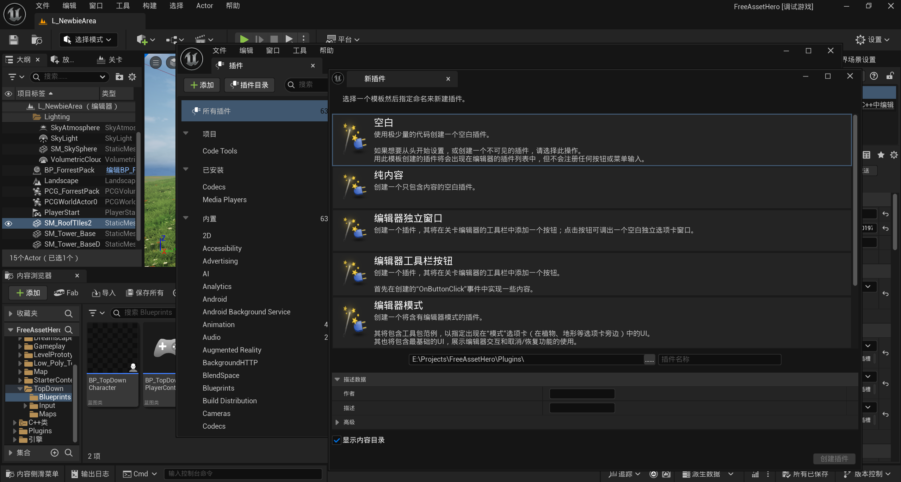

虚幻引擎之浅谈SceneViewExtension
前言
我们都知道虚幻引擎是一个非常强大且使用广泛的商业引擎，在虚幻引擎的强大的渲染能力加持下，只要有质量足够好的模型，一个新手都可以得到非常逼真的渲染场景。
但是如果你是一个图形开发工程师，在虚幻引擎中定制自己的渲染过程是非常麻烦的，很有可能涉及到修改虚幻引擎的源代码，那这样一个很简单的修改调试起来都会非常的麻烦。（想起来之前做UE项目的时候，只要有引擎相关的代码更新，我们本地编译基本上就是2、3个小时起了，基本上干不了活。）
在这方面Unity的URP的灵活性就要好很多，也许是引擎的设计理念不同，Unity的可能更多的是面向技术人员，需要有更多的图形学技术能力以及自定义能力；而虚幻引擎可能更多的面向美术和设计人员，更多的是使用蓝图来实现多样的效果，提供统一且强大的渲染管线。
在虚幻引擎4.12版本中，Epic引入了SceneViewExtension，它为开发者提供了一种在场景渲染过程中插入自定义渲染逻辑的方式，通过它可以实现很多自定义渲染效果，比如后处理效果、自定义的调试信息显示等。这种机制允许开发者在不直接修改引擎核心渲染代码的前提下，扩展和定制渲染流程。
在网上SceneViewExtension的内容其实并不多，或者说是讲的都是比较粗浅的内容，如何通过SceneViewExtension一步一步实现自定义渲染效果好像还没有官方的教程。幸运的是，我找到了一个开源的Github项目SceneViewExtensionTemplate，上面提供了一个利用SceneViewExtension修改后处理的模板，今天这篇文章就以这个模板来讲讲SceneViewExtension的相关内容。
当然UE的渲染过程其实还是比较复杂的，想要去修改它还需要很多学习。
创建SceneViewExtension插件
这里我们使选择通过一个插件来实现SceneViewExtension的能力。
在引擎中创建插件
创建插件非常简单，
- 从编辑->插件打开UE的插件窗口
- 点击左上角的添加按钮
- 选择空白模板，填写插件的名称和一些基础信息后点击创建插件

等待一小段时间让UE处理相关的文件创建，我们就可以在项目工程中看到我们的插件了。
这里提一点，我们的SceneViewExtension插件会调用一个Shader来实现后处理，为了让Shader能够正常的编译，插件的uplugin文件中，LoadingPhase需要设置为PostConfigInit，如下：
1 | |
插件结构
一个空白的插件目录结构大概如下所示：
1 | |
在MyPlugin.h/cpp中定义了插件的Module，在对应的Engine LoadingPhase的时候会调用
FMyPluginModule::StartupModule
来执行一些初始化的工作。LoadingPhase有多个阶段，包括PostEngineInit、PostConfigInit、Default、PreDefault、PostDefault等等，后面有机会会专门整理一篇文章讲讲UE的初始化（TODO）。当前我们设定为PostConfigInit。
创建SceneViewExtension扩展
接下来我们来创建SceneViewExtension的类，来实现我们自定义的渲染内容。示例代码如下：
1 | |
下面来介绍一下这个扩展：
首先，我们的子类需要继承FSceneViewExtensionBase这个基类，这个基类继承于ISceneViewExtension这个Interface。其中SetupViewFamily、SetupView和BeginRenderViewFamily这三个纯虚函数需要在子类中实现。
View和ViewFamily
这里有个概念需要特别的说明一些，就是View和ViewFamily，因为在处理UE的渲染的时候可能会经常遇到这两个词，包括在SceneViewExtension中，所以还是需要分清楚的。
简单来说，View和ViewFamily的关系如下：
-
View：代表一个具体的视角，对应一个摄像机的视图参数（如位置、朝向、投影矩阵、视口尺寸等），例如玩家摄像机的视图、过场动画中的特写镜头、分屏游戏中的某个玩家视图，或立体渲染中的左眼 / 右眼视图。
- 每个 View 包含独立的视图信息（FMinimalViewInfo）、投影矩阵、裁剪参数等。
- 是渲染流程的基本单元，直接对应最终输出的一个图像（如屏幕上的一个视口）。
-
ViewFamily：是一组相关 View 的集合，这些 View 共享相同的渲染配置和上下文（如渲染目标、渲染管线设置、立体渲染模式等）。
- 用于管理具有相同渲染需求的多个 View，例如：
- 立体渲染（Stereo Rendering）中的左眼和右眼 View 属于同一个 Family。
- 分屏游戏中，每个玩家的 View 可能属于不同的 Family（若渲染目标不同），或同一 Family（若共享相同的渲染配置）。
- 是更高层次的组织单元，负责协调旗下 View 的渲染顺序、资源共享和同步。
- 用于管理具有相同渲染需求的多个 View，例如：
一个ViewFamily可以对应不止一个View，但每个View必须从属与一个View Family。
那么对于上面的几个函数：SetupView会在每个View初始化的时候调用，SetupViewFamily会在创建ViewFamily的时候调用。
ISceneViewExtension的方法
除了上面介绍的SetupView和SetupViewFamily两个方法，还有其他的方法可以重写，这里简单介绍几个。
- BeginRenderViewFamily：在游戏线程即将渲染视图家族时调用。可以在视图家族渲染开始前进行一些准备工作，例如记录一些统计信息。
- PreRenderViewFamily_RenderThread: 在渲染线程开始渲染视图家族时调用。使用 FRDGBuilder 可以在渲染线程上为视图家族的渲染进行一些前期准备，例如创建一些渲染资源。
- PreRenderView_RenderThread: 在渲染线程开始渲染每个视图时调用，在 PreRenderViewFamily_RenderThread 之后。可以为每个视图的渲染进行一些特定的准备工作。
- PostRenderViewFamily_RenderThread: 在渲染线程完成视图家族的 3D 内容渲染之后调用。可以在视图家族渲染完成后进行一些额外的渲染操作，例如绘制调试信息。
- PostRenderView_RenderThread: 在渲染线程完成每个视图的 3D 内容渲染之后调用。可以在每个视图渲染完成后进行一些额外的渲染操作，例如绘制调试信息。
- SubscribeToPostProcessingPass: 在后处理开始时调用，确保每个视图扩展都有机会订阅某个后处理通道的回调。可以订阅特定的后处理通道，在该通道处理完成后执行自定义的回调函数。
注册SceneViewExtension方法
注册SceneViewExtension的方法非常简单，我们需要在一个合适的地方调用以下方法：
1 | |
在合适的地方管理MyExtension的生命周期，可以在插件的Module类中（不是特别建议），或者在某个Subsystem中。
好了，这就是SceneViewExtension的基本内容了。
使用SceneViewExtension进行后处理
一般的教程里面关于SceneViewExtension的内容就是这些了，如果只讲到这些内容的话，其实对于刚接触UE渲染的同学们来说还是一头雾水：好的，我继承了FSceneViewExtensionBase类，并且创建了NewExtension，通过断点或者Log打印能看到我们的Extension中的函数被调用了，然后呢？
是的，然后呢，后面其实很多教程不会讲到是因为后面的内容严格来说并不是SceneViewExtension的内容，而是和UE的渲染调用、自定义shader的使用这些相关。这些内容还有很多东西可以讲，但是我不在这里拓展了，后面会专门找机会对这些内容写几篇文章介绍。
下面的内容只是我根据SceneViewExtensionTemplate给出的例子，做一个简单介绍。遵循这个例子的流程，我们就能实现一个简单的流程，在自己的SceneViewExtension中实现一些后处理的效果。
Extension的初始化和反初始化
前面我提到过，可以在一个Subsystem中初始化SceneViewExtension，这是比较推荐的做法。这里我们创建一个EngineSubsystem的子类，在这个Subsystem中管理Extension的生命周期（一直存在）。
1 | |
初始化就是简单的调用FSceneViewExtensions::NewExtension并保存结果。反初始化的代码如下所示：
1 | |
其中IsActiveThisFrameFunctions是一个函数方法队列，每个方法都是用来判断这个Extension在当前Context和当前帧是否是激活状态。在释放前我们讲这个队列清除，只保留一个返回是否的方法。
定义我们的shader
在SceneViewExtensionTemplate示例中，通过添加一个自定义的Shader加到后处理的流程中，来达到实现改变渲染效果。
1 | |
首先这里定义了一个通用的着色器参数结构体，用于集中管理多个着色器的共享参数。
- BEGIN_SHADER_PARAMETER_STRUCT宏声明这个结构体的名称，END_SHADER_PARAMETER_STRUCT结束这个结构体的申明
- SHADER_PARAMETER_STRUCT_REF引用另外一个名为FViewUniformShaderParameters的结构体，将其重命名为ViewUniformBuffer
ViewUniformBuffer，也就是FViewUniformShaderParameters，会被UE的渲染管线自动填充，包括当前帧的视图相关数据。如果熟悉OpenGL或者Vulkan的同学，可能会对UBO这个概念比较了解，其实ViewUniformBuffer就类似与UE原有的和View相关的一个UBO，会自动更新数据，让多个shader都可以共享里面的数据。
1 | |
然后这里定义了一个FSVECustomShader类，这是一个继承于FGlobalShader的自定义全局着色器。
- DECLARE_GLOBAL_SHADER宏声明全局着色器。他会自动生成一些必要的代码，像着色器的构造函数、静态方法等。
- SHADER_USE_PARAMETER_STRUCT(FSVECustomShader, FGlobalShader)：此宏用于指定该着色器使用的参数结构体，这里表明 FSVECustomShader 使用的参数结构体基于 FGlobalShader。
- 在BEGIN_SHADER_PARAMETER_STRUCT和END_SHADER_PARAMETER_STRUCT之间定义了 FSVECustomShader 所使用的参数结构体 FParameters。
- SHADER_PARAMETER_STRUCT_INCLUDE：这个宏用于包含之前定义的通用参数结构体 FCommonShaderParameters，并将其命名为 CommonParameters。
- SHADER_PARAMETER：用于声明一个普通的着色器参数。这里声明了 ViewportRect（视口矩形）、ViewportInvSize（视口大小的倒数）和 SceneColorUVScale（场景颜色纹理的 UV 缩放因子）。
- SHADER_PARAMETER_RDG_TEXTURE：用于声明一个渲染依赖图（RDG）纹理参数。这里声明了 OriginalSceneColor，它是一个 Texture2D 类型的纹理，代表原始的场景颜色纹理。
- SHADER_PARAMETER_RDG_TEXTURE_UAV：用于声明一个可读写的渲染依赖图纹理参数。这里声明了 Output，它是一个 RWTexture2D<float4> 类型的可读写纹理，作为着色器的输出。
最后的ShouldCompilePermutation函数用于判断是否应该编译该着色器的某个变体。IsFeatureLevelSupported是一个函数，用于检查当前平台是否支持指定的特性级别。这里检查当前平台是否支持 ERHIFeatureLevel::SM5（Shader Model 5），如果支持则返回 true，表示应该编译该着色器变体；否则返回 false。
当我们定义好shader之后，我们还需要将shader注册到UE的着色器系统中，并且关联源代码。这里SceneViewExtensionTemplate做了以下几件事：
- 在Module的StartupModule函数中，将Shader文件的路径映射到一个虚拟路径，这样做的好处是，即使项目的文件结构发生变化，只要正确配置了路径映射，就无需修改大量的着色器引用代码。
1 | |
- 在Extension中实现我们定义的着色器。下面的方法，会把我们定义的FSVECustomShader注册到UE的着色器系统中，然后将FSVECustomShader和usf文件关联起来（注意这里的usf文件的路径是上面映射的虚拟路径）。之后指定入口函数MainCS以及设定shader的类型为ComputeShader（SF_Compute）
1 | |
使用自定义shader
好了，接下来如何使用我们的自定义shader呢？在SceneViewExtension中，有一个方法SubscribeToPostProcessingPass，在前面有简单的提到过，这个函数可以将一个回调函数注册到一个后处理通道上，当这个后处理通道执行完成后会回调我们注册的函数。
1 | |
这里我们将一个自定义的函数CustomPostProcessing注册到了后处理通道MotionBlur上，后处理通道有很多类型，这里就先不展开了。
接下来的关键就是CustomPostProcessing的实现了，整个流程还是比较直观的。
1 | |
上面的代码有几个点：
- 我们这里创建了一个命令来控制这个效果的开关CVarShaderOn
- 修改UE的渲染效果需要通过RDG（Render Dependency Graph渲染依赖图）来实现，它是一种用于管理和优化渲染流程的技术，并且UE中它兼容了不同平台和不同的API。这也是个可以深入挖掘很长时间，并且渲染开发人员需要掌握的能力。
- shader的代码可以参考一下SceneViewExtensionTemplate仓库中的PostProcessCS.usf，只要掌握了前面的shader定义里面的逻辑还是比较易懂的。需要注意的是shader中的变量View来自于通用着色器参数结构体ViewUniformBuffer，他可以隐式传递无需手动声明。
结语

最后这里就是这个SceneViewExtension的效果了。实现的效果非常的简单，但是只要掌握了这部分的能力，就已经能够对UE的渲染框架和流程有着一定程度的理解了。
UE的渲染架构庞大且复杂，还有很多可以研究的地方，后续也会继续探讨这方面的内容。